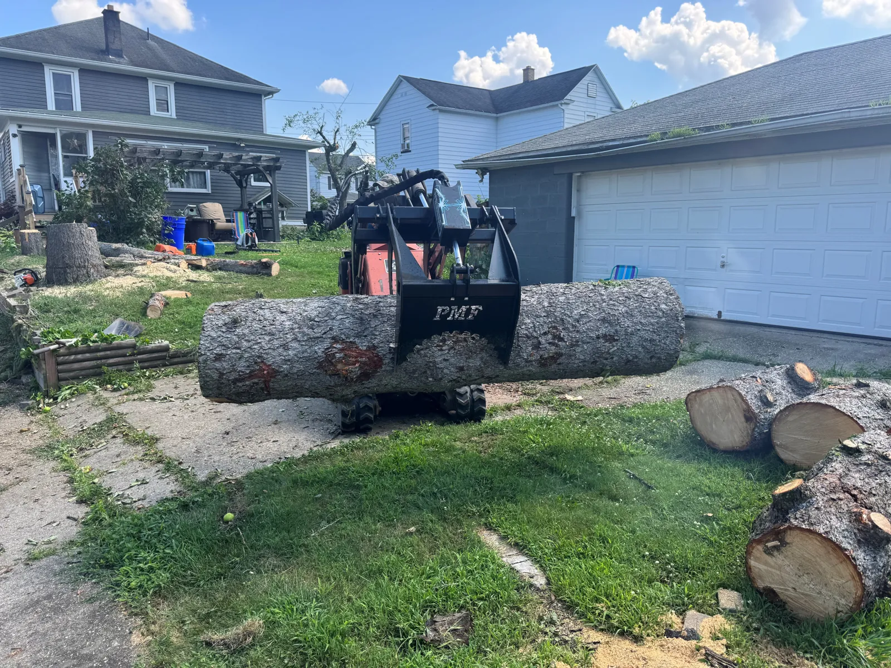
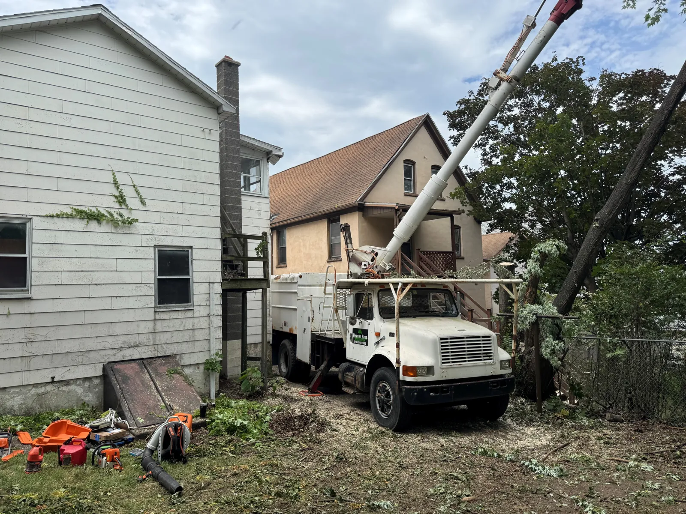

Tree removal & storm cleanup
Remove unwanted or hazardous trees, clear brush and handle the debris left by storm damage.

WEAVER BROS LANDSCAPING TREE SERVICE
Tree removal, trimming, stump grinding and cleanup from a crew that treats your property like it matters.
OUT HERE, DETAILS MATTER
There’s the cut, and then there’s the care around it: the house, the yard, the cleanup and the next thing you want to do with that space. Weaver Bros handles tree and landscape work with that whole picture in mind.
WHAT WE CAN HANDLE
Remove unwanted or hazardous trees, clear brush and handle the debris left by storm damage.
Careful tree and shrub trimming to create space, improve appearance and keep growth in check.
Take care of the stump that is in the way and get your yard ready for what comes next.
Mulch, rock, weed barrier, edging, seasonal cleanups and upkeep that give a property a clean finish.

Tree work at a local property.
IN THEIR WORDS
We needed several Bushes removed, a few trees brought down and cut up.... They did it in timely manner and cleaned up all the debris So that one wouldn’t know they were there !!
“Absolutely beautiful job!! Highly recommend for your lawn care service , true professionals!!!!”
CURRENT SPECIALS
Every tree and property is different. These offers outline the starting scope; we’ll quote your actual job before work begins.
Trees 20–50 feet · flexible scheduling · debris haulaway
For a 12–24 inch stump · reclaim your yard space
Up to one hour · debris removal · ornamentals excluded
LET'S LOOK AT THE JOB
Describe the trees or yard work you have in mind. Call, email or send the form and we’ll follow up about the next step.